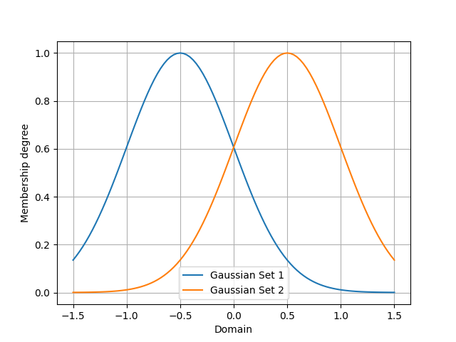

PyIT2FLS
PyIT2FLS is a NumPy and SciPy-based toolkit for Type 1 and Interval Type 2 Fuzzy Logic Systems.
PyIT2FLS is published under MIT license. If you are using the developed toolkit, please cite preprint of our paper PyIT2FLS: A New Python Toolkit for Interval Type 2 Fuzzy Logic Systems.
BibTeX:
@misc{haghrah2019pyit2fls,
title={PyIT2FLS: A New Python Toolkit for Interval Type 2 Fuzzy Logic Systems},
author={Amir Arslan Haghrah and Sehraneh Ghaemi},
year={2019},
eprint={1909.10051},
archivePrefix={arXiv},
primaryClass={eess.SY}
}
MLA:
Haghrah, Amir Arslan, and Sehraneh Ghaemi. "PyIT2FLS: A New Python Toolkit for Interval Type 2 Fuzzy Logic Systems." arXiv preprint arXiv:1909.10051 (2019).
Installation
PyIT2FLS can be installed by unzipping the source code in a directory and using this command inside the PyIT2FLS folder:
pip3 install .
Or you can use pip3:
pip3 install --upgrade pyit2fls
Support My Work with Tether (USDT)
If you find this Python library useful and would like to support its development, donations are greatly appreciated. You can send Tether (USDT) directly to the following address:
0x521c9d3ba891596baf99cef6a59a0790e15ddfbe
Thank you for your contribution, which helps maintain and improve this project!
Getting started
This section provides some elementary examples for using PyIT2FLS library. Advanced examples are accessible from examples directory of PyIT2FLS github repository.
Example 1
In the first example, we are going to define two trapezoidal type 1 fuzzy sets and then apply fuzzy AND and OR operators on them. First we define the trapezoidal fuzzy sets using the T1FS class and trapezoid_mf functions, plot them all together using T1FS_plot function:
from pyit2fls import (T1FS, trapezoid_mf, T1FS_plot, )
from numpy import linspace
domain = linspace(-1.5, 1.5, 100)
set1 = T1FS(domain, trapezoid_mf, [-1.25, -0.75, -0.25, 0.25, 1.])
set2 = T1FS(domain, trapezoid_mf, [-0.25, 0.25, 0.75, 1.25, 1.])
T1FS_plot(set1, set2, legends=["Trapezoidal Set 1", "Trapezoidal Set 2", ])
The output of this code would be as below:

Then, we try to compute the AND of these two sets using two different T-norms:
from pyit2fls import (min_t_norm, product_t_norm, T1FS_AND, )
set3 = T1FS_AND(domain, set1, set2, min_t_norm)
set4 = T1FS_AND(domain, set1, set2, product_t_norm)
T1FS_plot(set3, set4, legends=["Fuzzy Set 3", "Fuzzy Set 4", ])
The output of this code would be as below:

Finally, we try to compute the OR of these two sets using two different S-norms:
from pyit2fls import (max_s_norm, probabilistic_sum_s_norm, T1FS_OR, )
set5 = T1FS_OR(domain, set1, set2, max_s_norm)
set6 = T1FS_OR(domain, set1, set2, probabilistic_sum_s_norm)
T1FS_plot(set5, set6, legends=["Fuzzy Set 5", "Fuzzy Set 6", ])
The output of this code would be as below:
{kind=link}
Example 2
In the second example, we are going to define a simple type 1 TSK fuzzy system, calculate its output for some inputs, and plot the control surface for it. So, we first define the T1FSs representing inputs of the fuzzy system.
from pyit2fls import (T1TSK, T1FS, gaussian_mf, T1FS_plot, )
from numpy import (linspace, meshgrid, zeros, )
from mpl_toolkits import mplot3d
import matplotlib.pyplot as plt
from matplotlib import cm
from matplotlib.ticker import (LinearLocator, FormatStrFormatter, )
domain = linspace(-1.5, 1.5, 100)
t1fs1 = T1FS(domain, gaussian_mf, [-0.5, 0.5, 1.])
t1fs2 = T1FS(domain, gaussian_mf, [ 0.5, 0.5, 1.])
T1FS_plot(t1fs1, t1fs2, legends=["Gaussian Set 1", "Gaussian Set 2", ])
The output of this code would be as below:
{kind=link}
As you see, there are two Gaussian fuzzy sets. The parameters of a Gaussian membership function are mean, standard deviation, and height, respectively. Then we should define the T1TSK system and its input and output variables.
myT1TSK = T1TSK()
myT1TSK.add_input_variable("X1")
myT1TSK.add_input_variable("X2")
myT1TSK.add_output_variable("Y")
The next thing we should define is the outputs of the fuzzy rules. These outputs must be functions of the inputs. According to our definition of myT1TSK, we have two inputs. So, each output function must have to inputs. Let’s assume that there will be four rules.
def Y1(X1, X2):
return 2. * X1 + 3. * X2
def Y2(X1, X2):
return -1.5 * X1 + 2. * X2
def Y3(X1, X2):
return -2. * X1 - 1.2 * X2
def Y4(X1, X2):
return 5. * X1 - 2.5 * X2
After defining the output functions, we will define the rules using the following rule-base:
X2: t1fs1 |
X2: t1fs2 |
|
X1: t1fs1 |
Y: Y1 |
Y: Y2 |
X1: t1fs2 |
Y: Y3 |
Y: Y4 |
myT1TSK.add_rule([("X1", t1fs1), ("X2", t1fs1)],
[("Y", Y1), ])
myT1TSK.add_rule([("X1", t1fs1), ("X2", t1fs2)],
[("Y", Y2), ])
myT1TSK.add_rule([("X1", t1fs2), ("X2", t1fs1)],
[("Y", Y3), ])
myT1TSK.add_rule([("X1", t1fs2), ("X2", t1fs2)],
[("Y", Y4), ])
Now, it is time to evaluate the system output for different points in the univertse of discourse and plot the control surface:
X1, X2 = meshgrid(domain, domain)
O = zeros(shape=X1.shape)
for i, x1 in zip(range(len(domain)), domain):
for j, x2 in zip(range(len(domain)), domain):
o = myT1TSK.evaluate({"X1":x1, "X2":x2}, params=(x1, x2))
O[i, j] = o["Y"]
fig = plt.figure()
ax = fig.add_subplot(111, projection="3d")
surf = ax.plot_surface(X1, X2, O, cmap=cm.coolwarm,
linewidth=0, antialiased=False)
ax.zaxis.set_major_locator(LinearLocator(10))
ax.zaxis.set_major_formatter(FormatStrFormatter('%.02f'))
fig.colorbar(surf, shrink=0.5, aspect=5)
plt.show()
Finally, the output of this code would be as below: